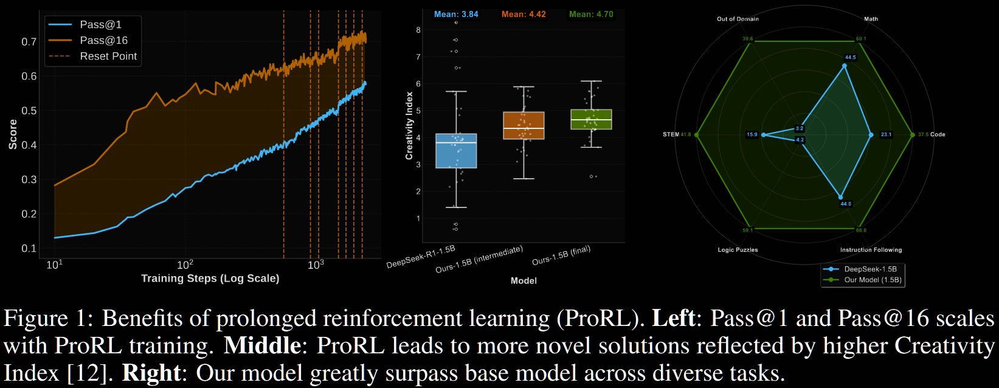
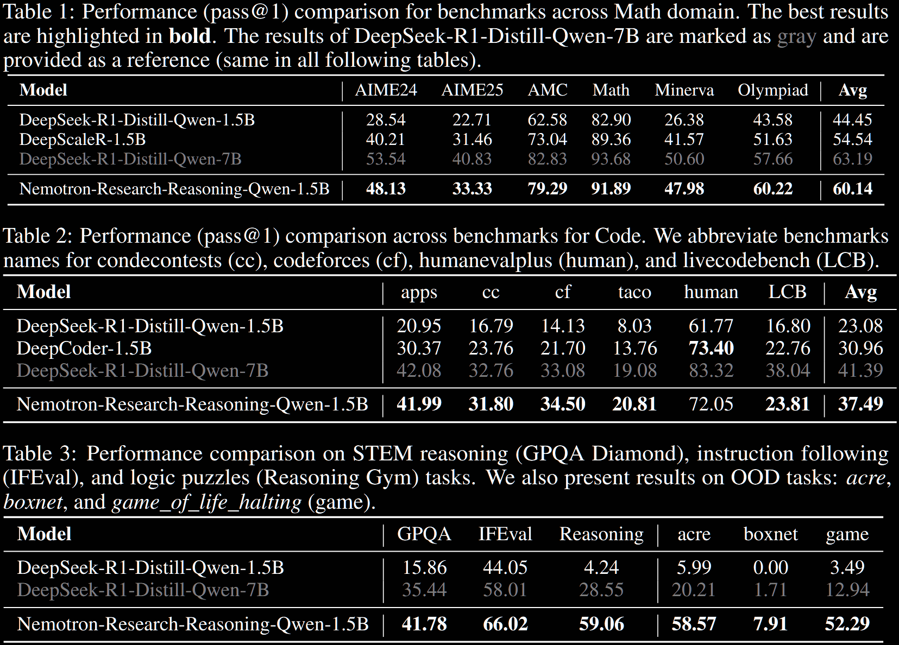
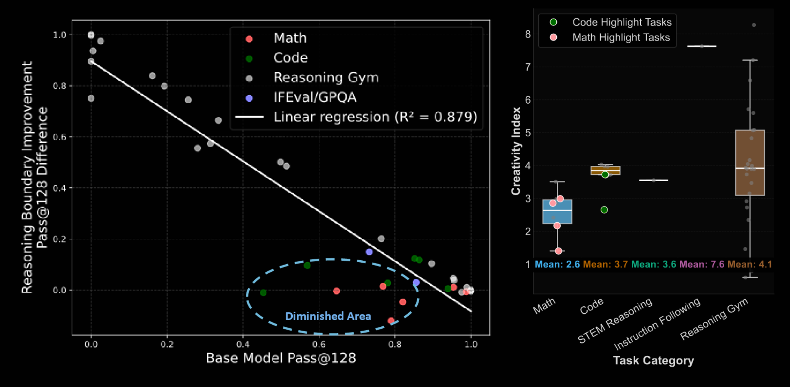

Reinforcement learning (RL) has had a resurgence in LLMs with application to reasoning models. However, contention remains regarding whether RL expands capabilities or simply amplifies high-reward outputs already learned. In ProRL, the authors (from NVIDIA) argue for the former. They find examples in which RL-trained models outperform even pass@k evaluations with large k—ie, when the original model is given many attempts. This is achieved via prolonged RL training, suggesting that RL training scales effectively with increased compute.

The model weights are released to support further research: https://huggingface.co/nvidia/Nemotron-Research-Reasoning-Qwen-1.5B.
Recent reasoning-focused LLMs, like OpenAI-o1/o3 or DeepSeek-R1, require significant inference-time compute, often driven by long chain-of-thought (CoT) strategies. RL is proposed to improve the inherent reasoning abilities, instead of simply throwing more compute. The authors posit previous negative conclusions from attempts stem from methodological constraints, rather than fundamental RL ones.
The authors introduce ProRL to address these. It enables extended RL training, across diverse tasks, which (they hypothesise) is crucial for generalisation. With this, they develop Nemotron-Research-Reasoning-Qwen-1.5B, which they describe as "the world's best 1.5B reasoning model". It significantly outperforms its base, DeepSeek-R1-1.5B, and matches or even surpasses DeepSeek-R1-7B across a diverse range of benchmarks.
Group Relative Policy Optimisation (GRPO) is utilised, with a couple of variations addressing entropy collapse and instability via a KL penalty and periodic resetting.
The base model, from which the prolonged RL training is initiated, is DeepSeek-R1-1.5B. They find significant improvement over the baseline, and even compete with the 7B version:
+15.7% on maths; +14.4% on code; +25.9% on STEM, +22.0% on instruction following; +54.8% on text-based logic puzzles from Reasoning Gym.
It also surpasses the maths- and code-specialised baselines DeepScaleR and DeepCoder by +4.6% and +6.5%, respectively. Full details are given in the evaluation table below.

This demonstrates the value in their prolonged training; see Figure 1 above. It does not address generalisation. To this end, the model is evaluated on three out-of-distribution benchmarks: acre, boxnet and game_of_life_halting; it performs very well on all of these, far exceeding even the 7B version.
Their study finds that the effectiveness of RL in improving reasoning (measured by pass@128) is strongly influenced by the initial capability: a significant negative correlation is observed. Specifically, when the model already performs well, little is gained; when it initially performs poorly (even completely failing), a marked increase can may be observed.

The paper provides compelling evidence that RL truly can expand LLM's reasoning abilities, not just improve their extraction. This is achieved by incorporating KL penalties and periodic reference-policy resets during an extended RL training period. It culminated in a state-of-the-art 1.5B reasoning model which performs well on several benchmarks. The authors refer to it as generalist, and 17 benchmarks are displayed, but there are still many more tasks that it could be evaluated on.